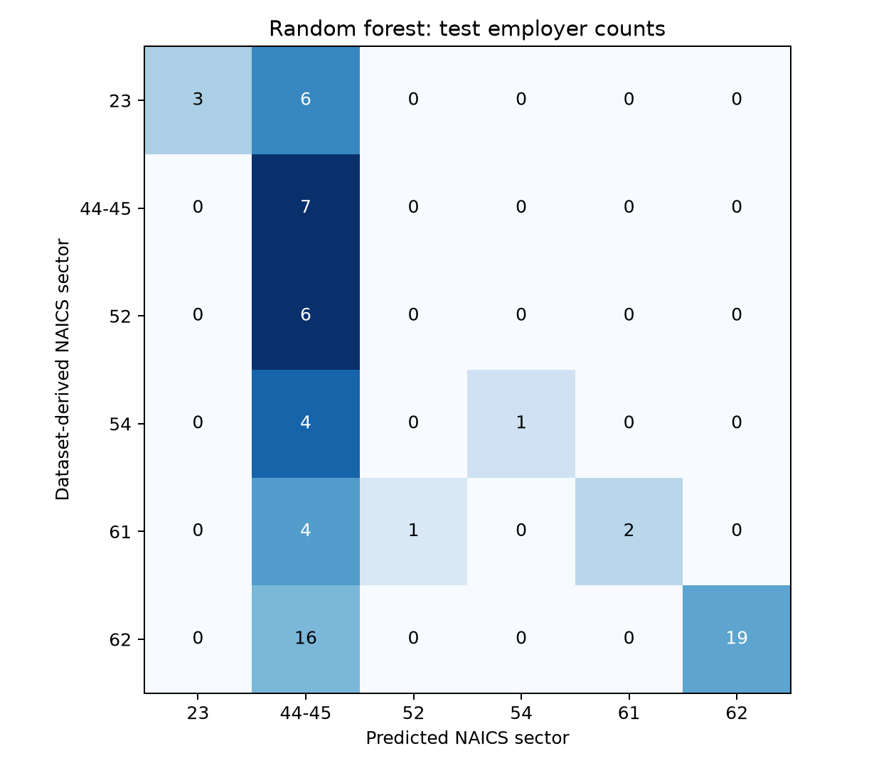

Multiclass industry classification
1 Multiclass industry classification
The additional experiment predicts one broad NAICS sector per employer. It extends the employer-name and job-title feature design in Goindani et al. (2017) beyond separate industry-membership questions. The healthcare career benchmark and the binary experiments retain their original scope.
1.1 Sector definitions and coverage
The input contains 815,193 records in 82 Jobs_2026_US partitions. Source file hashes differ from the saved healthcare experiment in 82 partitions. The current dataset documents a NAICS hierarchy repair, while the healthcare results retain their earlier input manifest. Equal row counts do not establish an identical snapshot; this extension is evaluated separately. The January–September 2026, US, staffing, employer-name and normalized-title filters apply before employer aggregation. Codes 31, 32 and 33 map to manufacturing (31–33); 44 and 45 to retail trade (44–45); and 48 and 49 to transportation and warehousing (48–49). These mappings change 0 posting labels in the current input, which already uses combined sectors, before computing employer dominance. Missing and invalid sectors are excluded, not treated as a learnable industry.
Employers require at least 20 retained postings and an 80% dominant-sector share. After normalization, 375 employers satisfy these rules. A sector requires at least 20 eligible employers to enter the experiment. This support rule retains 6 sectors and 328 employers; 47 eligible employers belong to sectors below the threshold. There is no employer cap. Labels describe broad sectors and remain unadjudicated dataset labels.
| NAICS | Industry | Employers |
|---|---|---|
| 23 | Construction | 41 |
| 44-45 | Retail trade | 33 |
| 52 | Finance and insurance | 27 |
| 54 | Professional, scientific and technical services | 23 |
| 61 | Educational services | 33 |
| 62 | Health care and social assistance | 171 |
Excluded sectors (eligible employer counts): 11 Agriculture, forestry, fishing and hunting (1); 21 Mining, quarrying, and oil and gas extraction (0); 22 Utilities (0); 31-33 Manufacturing (17); 42 Wholesale trade (0); 48-49 Transportation and warehousing (9); 51 Information (12); 53 Real estate and rental and leasing (5); 55 Management of companies and enterprises (1); 56 Administrative/support and waste management/remediation services (1); 71 Arts, entertainment and recreation (0); 72 Accommodation and food services (0); 81 Other services (except public administration) (1); 92 Public administration (0).
1.2 Employer partitions and features
Within each retained class, employers are ordered by SHA-256 of the seed 2017 and normalized employer name. The first floor(70%) form training, the next employers up to floor(80%) form validation, and the remainder form testing. Each employer belongs to exactly one partition. Normalized names do not resolve corporate aliases, so related entities may still cross partitions. The class-support rule is set before feature fitting; it uses label counts to define the study population.
| NAICS | Train | Validation | Test |
|---|---|---|---|
| 23 | 28 | 4 | 9 |
| 44-45 | 23 | 3 | 7 |
| 52 | 18 | 3 | 6 |
| 54 | 16 | 2 | 5 |
| 61 | 23 | 3 | 7 |
| 62 | 119 | 17 | 35 |
The partitions contain 227 training, 32 validation and 69 test employers. For each class, title and employer-word significance/frequency thresholds are calculated against the other training classes; the union of those selected vocabularies supplies 743 features. This replaces the healthcare-only positive-class feature selection. Titles retain the 1% within-employer share cutoff. Validation and test employers contribute neither vocabulary nor thresholds. Zero-feature employers remain in evaluation: 35 training, 12 validation and 28 test.
1.3 Model selection and held-out results
Scikit-learn implementations (Pedregosa et al. 2011) compare linear SVM, logistic regression, random forest and multiclass GBDT on identical partitions. SVM and logistic regression search C = 0.1, 1 and 10 with balanced class weights; random forest uses 200 trees and maximum depths 5 or unrestricted with balanced class weights; GBDT uses 100 boosting stages and tree depths 2 or 3 with default learning rate 0.1. GBDT uses unweighted training. Random states are fixed at 2017. Hyperparameters and then the model family are selected by validation macro-F1, with ties resolved by the listed order. Models are not refitted on validation data. The baseline always predicts the most frequent training class.
Macro-F1 gives each retained sector equal weight. Weighted-F1 and accuracy describe the observed test mix; balanced accuracy averages sector recall. Zero-denominator precision or F1 is recorded as zero. The validation-selected model is Random forest, with test macro-F1 0.377, compared with 0.112 for the training-majority baseline. This is a separate endpoint from healthcare-positive F1, so scores cannot be read as a direct improvement over the binary experiment.
| Model | Valid. macro-F1 | Test macro-F1 | Weighted-F1 | Accuracy | Bal. accuracy |
|---|---|---|---|---|---|
| Linear SVM | 0.183 | 0.424 | 0.568 | 0.638 | 0.369 |
| Logistic regression | 0.143 | 0.251 | 0.331 | 0.319 | 0.295 |
| Random forest | 0.317 | 0.377 | 0.520 | 0.464 | 0.394 |
| GBDT | 0.183 | 0.319 | 0.485 | 0.580 | 0.285 |
| Training majority | — | 0.112 | 0.341 | 0.507 | 0.167 |
Per-sector test results for the validation-selected Random forest:
| NAICS | Precision | Recall | F1 | Test employers |
|---|---|---|---|---|
| 23 | 1.000 | 0.333 | 0.500 | 9 |
| 44-45 | 0.163 | 1.000 | 0.280 | 7 |
| 52 | 0.000 | 0.000 | 0.000 | 6 |
| 54 | 1.000 | 0.200 | 0.333 | 5 |
| 61 | 1.000 | 0.286 | 0.444 | 7 |
| 62 | 1.000 | 0.543 | 0.704 | 35 |
The selected model recovered no test employers in sector(s) 52. This limits its use for filtering those industries.

1.4 Interpretation and limits
This experiment measures agreement across the supported broad industries. The predictions cover only retained sectors: an employer from an excluded sector would still be forced into one of these classes. No open-set detection or deployment inference is claimed. Rare sectors remain in the coverage report instead of being merged into an incoherent “other” class. The two-employer minimum validation support makes tuning sensitive to individual cases, and this single split does not establish stable sector-level performance. Independent label review, repeated employer-grouped evaluation and a later-period test remain necessary. Missing industry labels limit population coverage, and the results do not establish national hiring patterns.
The multiclass results do not replace the 112-posting healthcare career analysis or support personal skill-gap scores. Aggregate class support, metrics, per-sector results and all model confusion matrices accompany the source and run manifest.
2 Reproduction and downloads
python scripts/run_multiclass.py --data-dir E:/Data/Jobs_2026_US
python scripts/verify_multiclass.py
python scripts/publish_multiclass.py
python scripts/publish_interactive.pyRun manifest · Class coverage · Model metrics · Per-sector metrics · Confusion counts
Read the executable source, complete code display, or searchable aggregate tables. The healthcare evaluation and binary PySpark experiment remain separate analyses.